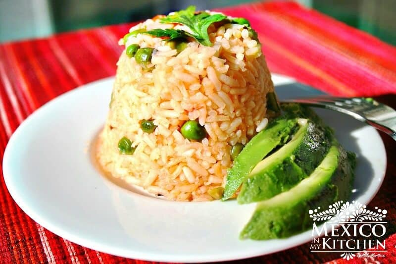

Arroz rojo a la mexicana

¿Qué es el arroz rojo?
El arroz rojo, mexicano o a la mexicana es un plato típico de la cocina mexicana y con diferentes variaciones según
el lugar, aunque básicamente consiste en arroz preparado en una salsa de jitomate (tomate rojo). Generalmente no se
consume como plato único sino como acompañamiento de otros platos.
El arroz rojo se puede encontrar con frecuencia en los menús de comida corrida como segundo tiempo, tras la sopa y
antes del plato fuerte. Junto con los frijoles, son la guarnición más clásica de este país para acompañar carnes y
pescados, o también para rellenar los tacos.
Ingredientes
- 1 tazas de arroz blanco grano largo
- 2 cucharadas de aceite vegetal
- 2 tazas de caldo de pollo
- 1 jitomate grande, picado
- 2 cucharadas de cebolla blanca picada
- 1 diente de ajo picado
- Sal al gusto
Instrucciones
- Coloca el arroz en un recipiente grande y vierta agua caliente hasta cubrirlo, revuélvalo una vez, luego deja
reposar durante 15 minutos.
- Escurrir con un colador sobre el fregadero, enjuagarlo con agua fría, y luego vuelva a escurrir. Agita bien el
colador para eliminar el exceso de agua y deja secar ligeramente. Si utiliza chicharos de los congelados, primero
los descongelas. Para este arroz, usa ½ taza de chicharos; esta es una elección personal, también puedes agregar
zanahorias si lo desea.
- Calienta el aceite a temperatura media-alta en una cacerola grande, agrega el arroz, debe chispear un poco
mientras toca el aceite, cocine a fuego medio-alto hasta que comience a cambiar a un color dorado claro; este paso
durará de 6 a 8 minutos, revuelve de vez en cuando para asegurarte de que el arroz no se pegue a la parte inferior
de la cacerola.
- Con cuidado, inclina la sartén y elimina el exceso de aceite con una cuchara.
- Mientras se está friendo el arroz, coloca los jitomates, el ajo y la cebolla en la licuadora, licúa hasta que se
forme una salsa de textura fina.
- Agrega la mezcla de jitomate al arroz y revuelva a fuego medio-alto. (Algunas personas les gusta pasar esta
salsa por un colador antes de agregar al arroz.
- Mantenga la cocción hasta que toda el liquido de la salsa se haya evaporado, asegurándote de que no se adhiera a
la parte inferior de la cacerola. Te tardarás unos 5 minutos para este paso.
- Agrega el caldo y espera a que suelte el hervor, agrega las verduras “zanahorias, chicharos verdes, chiles
serrano y cilantro” (opcionales) y sal al gusto. Cubre la cacerola y cocina a fuego bajo hasta que toda el agua
haya evaporado.
- Utilizando un tenedor, cuidadosamente revisa que el arroz ya no tiene liquido; Si es así, continúe cocinando a
fuego lento durante unos minutos más, aún cubierto con la tapa de la cacerola, hasta que los granos de arroz estén
tiernos y todo el líquido se haya evaporado.. Retira la cacerola del fuego, sin destaparla, y déjala reposar
durante 10-15 minutos, para darle al arroz la oportunidad de seguir secándose y cocinando. Usando un tenedor,
levemente esponja el arroz y ya está listo para sírvalo.